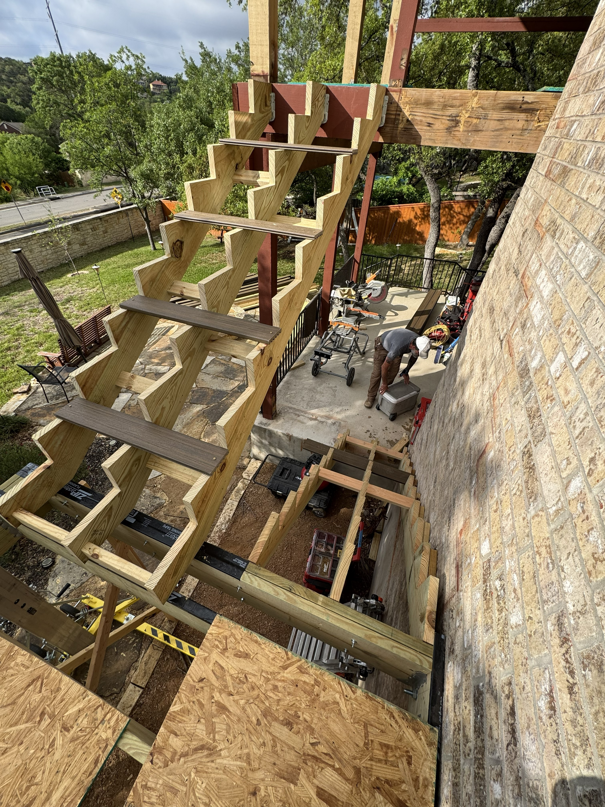

Deck Construction
Two-Story Deck Rebuild
A complete disassembly and reconstruction involving new structural framing, two stair systems, composite decking, and new railings.



Project Gallery
A closer look at completed projects, work in progress, structural challenges, and the decisions that shaped the final result.
Deck Construction
A complete disassembly and reconstruction involving new structural framing, two stair systems, composite decking, and new railings.

Structural Rebuild
What began as a deck-board replacement became a major structural rebuild after trapped water and hidden damage were uncovered beneath the existing surface.
 alt="Completed multi-level wood deck at Canyon Lake"
>
alt="Completed multi-level wood deck at Canyon Lake"
>
Specialty Stair Systems
Four stair systems requiring custom rail layout, precisely aligned balusters, hand-routed red-oak rails, and field developed installation methods.

Industrious Duo
Tell us what you are working with, what is not working, and what the finished result needs to accomplish.